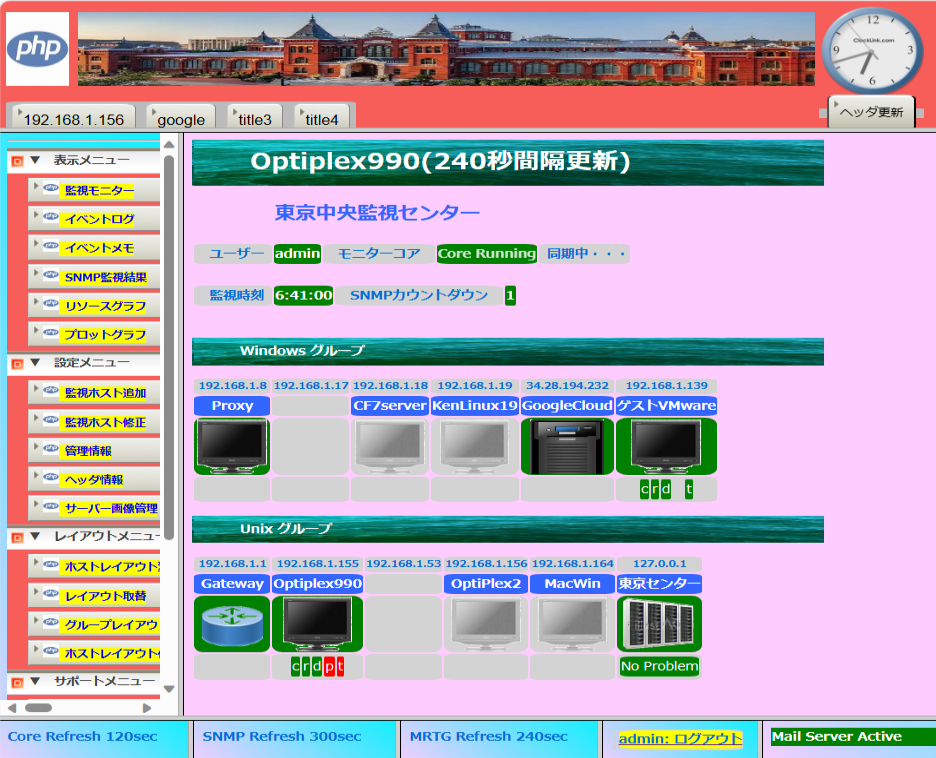
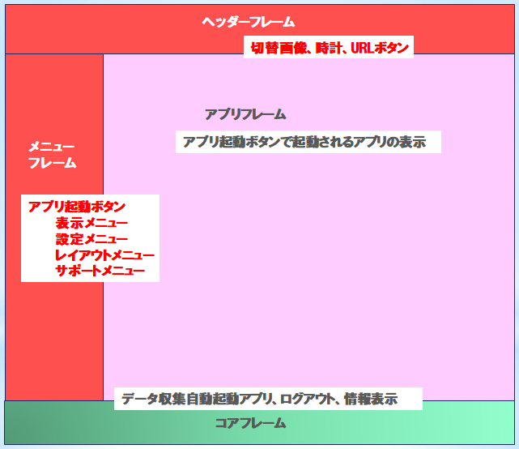
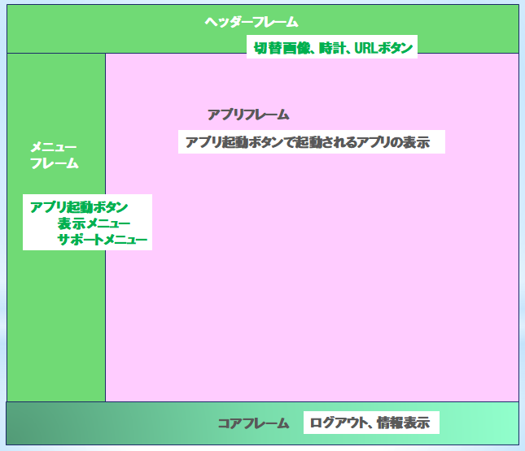
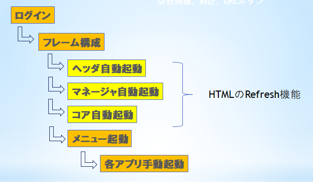

|  |
PHP版監視アプリ |
作成のきっかけ
ＩＴ初心者に対して、システム監視業務が「どのようなもの」で
「どのようなこと」をするのか実習させるために少しずつ作成して
来ましたので、公開することにしました
アプリの中身について
アプリを動作させることが目的であり、プログラムは思いつくまま
コーディングして来たことから統一性がなく、キレイとは言い難い
ため出来上がりの動作を楽しんでいただければ幸いです
又、基本的なテストだけの実施のみのため、バグが存在することが
ありますが、ＰＨＰとＨＴＭＬがベースになっておりますので、
ご自身で修正して下さい
アプリの気になるところ
- 主なテストが自宅内ＬＡＮ上のサーバーで実施しておりインターネット上の
サーバーからのレスポンス遅延の影響が大きく、特にポート、プロセスの
監視の遅延が目立ち、Ping監視以外、使い物にならない場合も考えられます
- Xamppをベースに、色々なパッケージで構成されています
バージョンの違いでエラーになる場合もありますので
とりあえず、指定のパッケージ、バージョンで試して下さい
アプリの特徴
- 監視対象がビジュアルに視えます
- 監視対象の配置をカスタマイズ出来ます
- 管理者は１つのみログイン、一般操作者は複数ログイン出来ます
- 他サイトの監視アプリへもヘッダーのURLからログイン出来ます
- PHPプログラムのため修正、追加が簡単に出来ます
カスタマイズ例
カスタマイズされた画面例です

画面レイアウト
ログインするユーザにより画面色、メニュー項目が異なります
| 管理者用レイアウト | 一般操作者用レイアウト |
|---|
|  |
 |
アプリ起動フロー
ログインから監視アプリ全体を起動されるフローを示します

自動起動の工夫
ｐｈｐコーディング 5秒間隔でリフレッシュ サンプル
echo '<html><head>';
echo '<meta http-equiv="Refresh" content= "5">';
echo '</head><body>';
$sec=date("s秒");
echo "<h1>{$sec}</h1>";
echo '</body></html>';
?>
セッションキー利用
各画面遷移にユーザIDを受け渡しさせるため、セッションキーを利用
ユーザ登録 サンプル
function setsess($value){
echo '<script type="text/javascript">';
echo 'sessionStorage.setItem("user","'.$value.'");';
echo '</script>';
}
...
$user='hoge';
setsess($user);
登録済のセッションキーuserで値を取得し自プログラムへ戻す
ユーザ得られなければ、unknowを戻す
ユーザ取得 サンプル
function paramGet($_pgm){
echo '<html>';
echo '<body onLoad="document.F.submit();">';
echo "<form name='F' action={$_pgm} method='get'>";
echo '<input type="hidden" name="param" value="">';
echo '<input type="submit" name="next" style="display:none;" />';
echo '</form></body></html>';
echo '<script type="text/javascript">';
echo 'var keyvalue = sessionStorage.getItem("user");';
echo 'if (!keyvalue) {';
echo ' keyvalue = "unknown";';
echo '}';
echo 'document.forms["F"].elements["param"].value = keyvalue;';
echo '</script>';
}
...
paramGet('program名');
...
$user=$_GET[‘param’];
処理結果を戻す工夫
処理結果を自プログラムへ通知し、プログラムの上位に表示する サンプル
<?php
function branch($_page,$_param)
echo '<html>';
echo '<body onLoad="document.F.submit();">';
echo "<form name='F' action={$_page} method='get'>";
echo "<input type=hidden name=param value={$_param}>";
echo '<input type="submit" name="next" value="Waiting...">';
echo '</form>';
exit();
}
$pgm="プログラム名";
if (isset($_GET['message'])){
echo $_GET['message'];
if ($_GET['message']=='error'){
branch($pgm,'異常発生');
}elseif($_GET['message']=='normal'){
branch($pgm,'正常終了');
}
}
echo '<html><body>';
if (isset($_GET['param'])){
echo "<h3>{$_GET['param']}</h3><hr>";
}
echo '<h2>タイトル</h2>';
echo 'normalまたはerrorを入力し実行する';
echo '<form action="TestMsgTop.php" method="get">';
echo '<input type="text" name="message" value="">';
echo '<input type="hidden" name="param" value="入力なし">';
echo '<input type="submit" name="end" value="実行" >';
echo '</body></html>';
?>
動作確認図
ソースの場所、その他
ソースの場所はこちらです
なお、不具合対応、インストール方法など、お手伝い出来ませんので悪しからず
-------------------------------------------------------------------------------------
2023年12月 OssianSunny